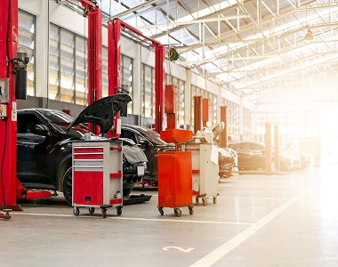

Importance of Regular Car Maintenance
Regular car maintenance is essential to ensure that your vehicle is running efficiently, safely, and reliably. By keeping your car in good condition, you can save money in the long run by avoiding costly repairs and extending the lifespan of your vehicle. Here are some reasons why regular car maintenance is important:
- Increases Safety
- Regular car maintenance helps to keep you and your passengers safe on the road. Faulty brakes, worn tires, and other mechanical problems can lead to accidents, putting you and others at risk. By having your car regularly serviced and maintained, you can identify and fix potential issues before they become major problems.
- Saves Money
- Preventative maintenance is more cost-effective than repairing major issues that could have been prevented with regular maintenance. Regular oil changes, for example, can prevent engine damage and prolong the life of your vehicle. Additionally, identifying and repairing small issues early on can prevent them from turning into larger, more expensive problems.
- Improves Performance
- Regular car maintenance can improve the performance of your vehicle, including fuel efficiency, acceleration, and handling. Simple tasks like replacing air filters and checking tire pressure can make a big difference in the overall performance of your car.
- Maintains Resale Value
- If you plan on selling your car in the future, regular maintenance can help maintain its resale value. A well-maintained vehicle will be more attractive to potential buyers, and they will be more likely to pay a higher price for a car that has been properly cared for.
- Extends the Life of Your Vehicle - Regular maintenance can help extend the life of your car, reducing the need for costly repairs and replacement parts. By keeping your car well-maintained, you can avoid the need for a new car and save money in the long run.
- In conclusion, regular car maintenance is essential to keep your car running smoothly, safely, and efficiently. By investing in regular maintenance, you can save money, improve the performance of your vehicle, and ensure that your car lasts for years to come.

Here are some interesting links
https://www.thrillist.com/cars/nation/things-car-guys-should-know-basic-automotiveknowledge
https://www.qld.gov.au/transport/safety/holiday-travel/long-trips